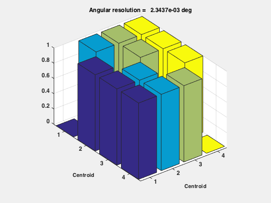

Demonstrates star identification using the Hipparcos catalog.
------------------------------------------------------------------------
See also StarIdentification, StarDataGeneration, PinholeCamera, Q2Mat,
QRand, SaveStructure, ComputePixelMapScale, PinholeStarCamera, LoadCatalog
----------------------------------------------------------------------
Contents
demoMode = 'polar';
testIntensity = 0;
Camera parameters
pixels = 1280;
degToRad = pi/180;
fieldOfView = 30*degToRad;
fScale = ComputePixelMapScale( pixels, fieldOfView );
camera.fScale = fScale;
camera.wX = pixels;
camera.wY = pixels;
camera.gain = 1e9;
pixelInterpolation = 0.1;
angularResolution = pixelInterpolation*(fieldOfView)/pixels;
catalogName = 'HipparcosDemo.mat';
Set the directory to the location of this function
cd(fileparts(which('HipparcosDemo')));
Create the catalog if it does not exist
if( isempty(which(catalogName)) )
vMCutoff = 4.3;
starCatalog = LoadCatalog('Hipparcos',vMCutoff);
d = StarDataGeneration( starCatalog, fieldOfView, angularResolution );
SaveStructure( d, catalogName );
else
d = load(catalogName);
end
Flag to plot the stars
plotStars = 1;
switch demoMode
case 'polar'
b = eye(3);
case 'random'
b = Q2Mat( QRand );
otherwise
disp(sprintf('%s is not an available demo mode',demoMode));
end
starMeasurement = PinholeStarCamera( b, camera, d.starCatalog, plotStars )
d.pixelMapScale = fScale;
d.starMatrix(1,:) = d.starMatrix(1,:)*camera.gain;
if( testIntensity )
starMeasurement.pixelLocation = starMeasurement.pixelLocation(:,1);
starMeasurement.pixelIntensity = starMeasurement.pixelIntensity(1);
end
Table of Star Names
-------------------
Number Name
24
57 Polari
293
515
starMeasurement =
star: [24 57 293 515]
pixelLocation: [2x4 double]
pixelIntensity: [0.50746 4.1058 0.4891 0.52168]
This option is used if one star is in the field of view
options = struct('useAbsoluteIntensity',1);
options.intensityTolerance = 0.01;
options.usePivot = 1;
stars = StarIdentification( starMeasurement, d, options, plotStars );
identifiedStars = stars
identifiedStars =
24 57 293 515
